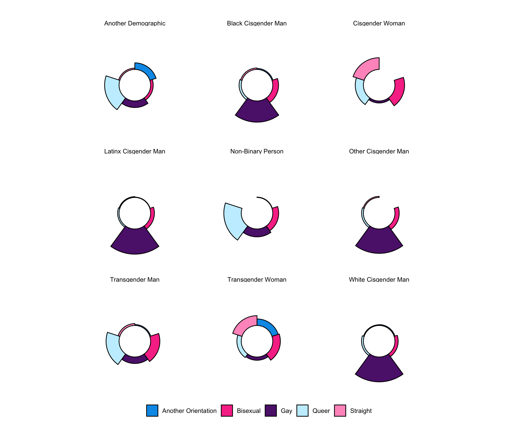

| Variable | Physical or sexual contact in group setting in past 4 weeks | p-value2 | ||
|---|---|---|---|---|
| Yes N = 5301 |
No N = 7741 |
Overall N = 1,3041 |
||
| Age | <0.001 | |||
| 18-24 | 92 (17%) | 103 (13%) | 195 (15%) | |
| 25-34 | 234 (44%) | 304 (39%) | 538 (41%) | |
| 35-44 | 135 (25%) | 190 (25%) | 325 (25%) | |
| 45-54 | 48 (9.1%) | 97 (13%) | 145 (11%) | |
| 55+ | 21 (4.0%) | 80 (10%) | 101 (7.7%) | |
| Race | 0.5 | |||
| White | 279 (53%) | 416 (54%) | 695 (53%) | |
| Latinx | 103 (19%) | 128 (17%) | 231 (18%) | |
| Black | 60 (11%) | 96 (12%) | 156 (12%) | |
| Asian | 32 (6.0%) | 52 (6.7%) | 84 (6.5%) | |
| Multi Racial | 37 (7.0%) | 42 (5.4%) | 79 (6.1%) | |
| Another Group | 19 (3.6%) | 38 (4.9%) | 57 (4.4%) | |
| Unknown | 0 | 2 | 2 | |
| Gender identity | 0.4 | |||
| Cisgender Man | 427 (81%) | 630 (81%) | 1,057 (81%) | |
| Non Binary | 39 (7.4%) | 57 (7.4%) | 96 (7.4%) | |
| Transgender Man | 17 (3.2%) | 17 (2.2%) | 34 (2.6%) | |
| Transgender Woman | 14 (2.7%) | 15 (1.9%) | 29 (2.2%) | |
| Cisgender Woman | 19 (3.6%) | 43 (5.6%) | 62 (4.8%) | |
| Another Demographic | 12 (2.3%) | 12 (1.6%) | 24 (1.8%) | |
| Unknown | 2 | 0 | 2 | |
| Race x gender | 0.5 | |||
| White Cisgender Man | 218 (41%) | 334 (43%) | 552 (42%) | |
| Latinx Cisgender Man | 88 (17%) | 110 (14%) | 198 (15%) | |
| Black Cisgender Man | 50 (9.5%) | 81 (10%) | 131 (10%) | |
| Other Cisgender Man | 71 (13%) | 105 (14%) | 176 (14%) | |
| Non-Binary Person | 39 (7.4%) | 57 (7.4%) | 96 (7.4%) | |
| Transgender Man | 17 (3.2%) | 17 (2.2%) | 34 (2.6%) | |
| Transgender Woman | 14 (2.7%) | 15 (1.9%) | 29 (2.2%) | |
| Cisgender Woman | 19 (3.6%) | 43 (5.6%) | 62 (4.8%) | |
| Another Demographic | 12 (2.3%) | 12 (1.6%) | 24 (1.8%) | |
| Unknown | 2 | 0 | 2 | |
| Sexual Orientation | 0.010 | |||
| Gay | 362 (68%) | 498 (64%) | 860 (66%) | |
| Bisexual | 67 (13%) | 119 (15%) | 186 (14%) | |
| Straight | 14 (2.6%) | 50 (6.5%) | 64 (4.9%) | |
| Queer | 71 (13%) | 88 (11%) | 159 (12%) | |
| Another Orientation | 16 (3.0%) | 19 (2.5%) | 35 (2.7%) | |
| Borough | 0.019 | |||
| Bronx | 31 (5.8%) | 66 (8.5%) | 97 (7.4%) | |
| Brooklyn | 176 (33%) | 258 (33%) | 434 (33%) | |
| Manhattan | 259 (49%) | 320 (41%) | 579 (44%) | |
| Queens | 58 (11%) | 119 (15%) | 177 (14%) | |
| Staten Island | 6 (1.1%) | 11 (1.4%) | 17 (1.3%) | |
| Recruitment channel | 0.002 | |||
| Grindr | 262 (49%) | 444 (57%) | 706 (54%) | |
| Partner toolkit | 60 (11%) | 82 (11%) | 142 (11%) | |
| 47 (8.9%) | 65 (8.4%) | 112 (8.6%) | ||
| 19 (3.6%) | 43 (5.6%) | 62 (4.8%) | ||
| Unknown | 142 (27%) | 140 (18%) | 282 (22%) | |
| Count of queer/trans friends | <0.001 | |||
| 0 | 64 (12%) | 155 (20%) | 219 (17%) | |
| 1-5 | 206 (39%) | 333 (43%) | 539 (41%) | |
| 6-10 | 136 (26%) | 167 (22%) | 303 (23%) | |
| 11-15 | 49 (9.2%) | 41 (5.3%) | 90 (6.9%) | |
| 16+ | 75 (14%) | 78 (10%) | 153 (12%) | |
| Count of physical contact partners | <0.001 | |||
| 0 | 98 (18%) | 301 (39%) | 399 (31%) | |
| 1 | 68 (13%) | 191 (25%) | 259 (20%) | |
| 2 | 66 (12%) | 105 (14%) | 171 (13%) | |
| 3 | 46 (8.7%) | 64 (8.3%) | 110 (8.4%) | |
| 4 | 47 (8.9%) | 32 (4.1%) | 79 (6.1%) | |
| 5+ | 205 (39%) | 81 (10%) | 286 (22%) | |
| HIV Status | 0.6 | |||
| Living with HIV | 60 (11%) | 81 (10%) | 141 (11%) | |
| Not living with HIV | 470 (89%) | 693 (90%) | 1,163 (89%) | |
| HIV viral suppression | 0.3 | |||
| Suppressed | 54 (90%) | 78 (95%) | 132 (93%) | |
| Not Suppressed | 6 (10%) | 4 (4.9%) | 10 (7.0%) | |
| Unknown | 470 | 692 | 1,162 | |
| Number STI Symptoms | <0.001 | |||
| 0 | 412 (78%) | 681 (88%) | 1,093 (84%) | |
| 1+ | 118 (22%) | 93 (12%) | 211 (16%) | |
| PrEP Use | <0.001 | |||
| Not on PrEP | 218 (46%) | 440 (63%) | 658 (57%) | |
| On PrEP | 252 (54%) | 253 (37%) | 505 (43%) | |
| Unknown | 60 | 81 | 141 | |
| MPOX Test | 0.001 | |||
| Tested | 58 (11%) | 47 (6.1%) | 105 (8.1%) | |
| Untested | 472 (89%) | 727 (94%) | 1,199 (92%) | |
| Count of sex partners | <0.001 | |||
| 0 | 48 (9.1%) | 272 (35%) | 320 (25%) | |
| 1 | 86 (16%) | 258 (33%) | 344 (26%) | |
| 2 | 96 (18%) | 110 (14%) | 206 (16%) | |
| 3 | 82 (15%) | 62 (8.0%) | 144 (11%) | |
| 4 | 62 (12%) | 29 (3.7%) | 91 (7.0%) | |
| 5+ | 156 (29%) | 43 (5.6%) | 199 (15%) | |
| Willing travel time for hooking up | <0.001 | |||
| 0-15 min | 121 (23%) | 262 (34%) | 383 (29%) | |
| 16-30 min | 221 (42%) | 270 (35%) | 491 (38%) | |
| 31-45 min | 71 (13%) | 88 (11%) | 159 (12%) | |
| 45+ min | 117 (22%) | 154 (20%) | 271 (21%) | |
| Recruitment date | 0.041 | |||
| 30-31 Aug 2022 | 239 (45%) | 372 (48%) | 611 (47%) | |
| 01-10 Sep 2022 | 110 (21%) | 118 (15%) | 228 (17%) | |
| 10-11 Sep 2022 | 98 (18%) | 171 (22%) | 269 (21%) | |
| 12 Sep - 31 Nov 2022 | 83 (16%) | 113 (15%) | 196 (15%) | |
| MPOX Vaccination | <0.001 | |||
| Vaccinated | 409 (77%) | 461 (60%) | 870 (67%) | |
| Unvaccinated | 121 (23%) | 313 (40%) | 434 (33%) | |
| Data source: MPX NYC 2022 | ||||
| 1 n (%) | ||||
| 2 Pearson’s Chi-squared test; Fisher’s exact test | ||||
4 Participants
The MPX NYC survey was open from 30 August to 15 November, 2022, but recruited \(70\%\) participants in two 48 hour periods: half were recruited from 30 to 31 Aug, and another 20% from 10 to 11 September (see Figure 4.1). Over these periods, the MPX NYC recruitment advertisements were shown to users of Grindr in New York City upon logging on to the app.
MPX NYC participants are demographically diverse. Over 50% of participants were between the ages of 18-34 at the time of the survey. Two fifths were white cisgender men, about 15% were latinx cisgender men, and 10% were black cisgender men. About 5% of participants were transgender (with slightly over half being transgender men). Non-binary individuals comprised 7% of participants. Two-thirds of participants identified as gay, 14% as bisexual, and 12% as queer. Just under half of participants resided in the borough of Manhattan, and one third in Brooklyn.
In terms of health status and health services, one in ten participants reported living with HIV - the overwhelming majority were virally suppressed. In addition, about 16% reported at least one STI symptom. Two out of five participants were on PrEP at the time they took the survey. Two-thirds had received the MPOX vaccine, though only 8% had received MPOX testing.
This diversity of subgroups implies different strategies for communication, and possibly different health interventions. For instance, the sexual orientation of participants differed markedly by gender (see Figure 4.2). The vast majority of cisgender men identified as gay, with some identifying as bisexual. Transgender men, on the other hand, were most likely to identify as queer, followed by bisexual or gay. Transgender women tended to identify as straight, bisexual, or other sexual orientations. Cisgender women participants tended to be straight, followed by bisexual, followed by queer. For non-binary people, most identified as queer, followed by gay and bisexual.
make_table_freq2(sexOrientation, demo_group) |>
plot_radar_grid() |>
apply_style_radar_grid_plot()`summarise()` has grouped output by 'level', 'stratum_a'. You can override
using the `.groups` argument.
`summarise()` has grouped output by 'rep', 'level', 'stratum_a'. You can
override using the `.groups` argument.
`summarise()` has grouped output by 'stratum_a', 'stratum_b'. You can override
using the `.groups` argument.
MPX NYC participants were deeply connected to queer and trans communities in New York City. About two-thirds reported being in recent (preceding 4 weeks) contact with 1 - 10 queer or trans friends. Only 20% reported not being in contact. About half of the participants had between 1 and 3 recent serial sex partnerships with one fifth reporting four or more partners. About one third of participants reported spending 16-30 minutes when traveling to a hookup while a third spent more than 30 minutes. Almost one in four participants reported having recent physical (non-sexual) contact with 2 or more individuals at the same time, and one third reported having had no contact. [DOUBLE CHECK]
Among all MPX NYC participants, 40% (530) reported reported having had sex or physical contact with two or more people at the same time. These participants identified \(604\) venues at which they had contact. These contact venues are examined in the next section.
Participants who reported recent physical or sexual contact in a group setting (group contact) were slightly younger than those who did not. They were more likely to identify as gay and less likely to identify as straight. Surprisingly, they were less likely to have been recruited through a Grindr advertisement and more likely to have been recruited before the first Grindr pop-up advertisement on 30 August 2022.
These participants did not differ from the rest in terms of HIV status or HIV viral suppression, but they were more likely to have at least one STI symptom, and showed higher utilization of PrEP, mpox testing, and mpox vaccine. They were more closely connected with the queer and trans community, reporting more contact with friends, more physical contact partners and more sexual contact partners. They spent more time travelling to hookups than participants who had not had recent contact in a group setting.